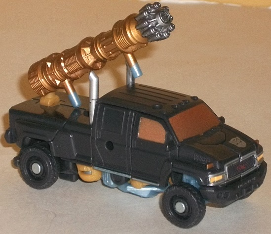

Barricade
Barricade
Allegiance : Decepticon
Size : Legion
Difficulty of Transformation : Very Easy
Color Scheme : White, black, and some metallic gunmetal gray, blue, and light red
Individual Rating : 7.3
"Cybertronian
Warriors" 4-Pack [DotM] (Toys "R" Us Exclusive)
Set Price : $40 U.S.
(NOTE: Because this set is composed of repaints,
this is not a full-blown review. This mainly covers any changes made to
the set and the color scheme, and merely compares it to the original versions
of these molds. For a review on TF1 Legends Barricade go
here
.
For a review on the original DotM Legion Bumblebee go
here
.
For a review on Bumblebee's original Mobile Battle Bunker, go
here
.
For a review on the original DotM Legion Crankcase, go
here
.
For a review on the original DotM commander Ironhide, go
here
.)
Barricade
Allegiance
: Decepticon
Size
: Legion
Difficulty of Transformation
: Very
Easy
Color Scheme
: White, black, and
some metallic gunmetal gray, blue, and light red
Individual Rating
: 7.3
This version of Barricade
is colored very similarly to the
solo-released
version
of the mold for this line, so comparisons are pretty inevitable.
White remains this version of Barricade's main color, with black being
a mere secondary color. There is a bit more black on this version though,
with major paint apps like the windows being black. It looks quite good
against the white, and a pretty good color for windows overall on this
"lighter" version of the toy. I could say the same thing about the quite
nice shade of gunmetal gray used for Barricade's head and arms in robot
mode-- it's a bit darker than your average silver paint, and really contrasts
well. That plus Barricade's evil face just looks really great painted in
that color with red eyes. The other major thing worth pointing out here
are the nifty "heartbeat" Decepticon-logo paint apps on the sides of this
mode, which look pretty snazzy considering the size and give the police
car a bit more of an "emergency vehicle" as opposed to a "law enforcement"
look-- and help pair him up with the set's Crankcase better. His lightbar
is also solid blue to help emphasize this aspect even more. That said,
a few minor points-- like his taillights and lower front grill-- are missing
some paint apps. That plus the lack of all the blue paint apps that the
original DotM release of this mold had brings what could have been a superior
color scheme with all that neat gunmetal gray back down to being on par
with the solo release of this mold.
No mold changes have
been made to this version of Barricade, beyond the right hand being modified
to hold Cyberverse-scaled weapons just like the solo DotM release of this
mold.
 Bumblebee
w/ Mobile Battle Bunker
Bumblebee
w/ Mobile Battle Bunker
Allegiance
: Autobot
Size
: Cyberverse Vehicle Set
Difficulty of Transformation of Robot
:
Very Easy
Difficulty of Transformation of Base
:
Easy
Color Scheme
: Orangish yellow, light
milky gray, dark gray, and some silver, black, metallic bronze, very dark
flat blue, and light sky blue
Figure Rating
: 8.1
Base Rating
: 8.4
This "redeco" of Bumblebee--
like many movieverse redecos-- isn't so much a bonafide new paint job,
just a variation on Bumblebee's well-known color scheme at this point.
His major color of orangish yellow is still intact, though much of his
traditionally black plastic is now a dark gray instead-- not a change I'm
fond of, as it looks less "pure" and doesn't contrast as well. The overly
large Autobot symbol on the roof is also a slight eyesore-- so much for
being a robot in disguise, 'Bee! On the other hand, the dark blue paint
used for the windows looks awesome and goes great with the yellow-orange,
and the "bumper damage" paint apps are a call back to a time during the
filming of the movie when, during shooting, the Bumblebee stunt car driver
got the super-duper expensive customized car into a bit of a fender bender,
resulting in the police and emergency vehicles showing up (hence why Barricade
and Crankcase are colored like they are in this set).
As for Bumblebee's "Mobile
Battle Bunker", most of it's either light or dark gray. Whoop-ee... just
what the movie lines needed, more boring gray plastic. That said, at least
the grays are different enough shades where they contrast with each other
somewhat. The paint apps are also quite well-done-- the bronze windows
and ramp tracks look great against the light gray, as does the nifty silver
Autobot symbol on top of the ramp. What I like the most of all about this
version are the nifty light blue paint apps around the missile launcher
and the headlights-- it's a really eye-catching shade of the color, and
one that I wish was used considerably more on the base to "liven things
up" a little.
No mold changes have
been made to this version of either Bumblebee or his Mobile Battle Bunker.
Crankcase
Allegiance
: Decepticon
Size
: Legion
Difficulty of Transformation
: Very
Easy
Color Scheme
: White, black, and
some metallic greenish silver, light red, yellow, and blue
Individual Rating
: 5.5
Crankcase gets the same
"police/emergency vehicle" kind of redeco that Barricade has gotten, with
largely the same results. White forms the major color, with black being
used mainly for the windows and tires. He also has the same "heartbeat
Decepticon" deco job on the sides-- and this, combined with the blue lightbar
at the top and the (barely visible, honestly) yellow-painted headlights,
makes him look considerably more visually distinct and varied compared
to his almost-one-color original deco job. His robot mode also has some
really neat paint apps as well-- specifically, his head and torso are coated
in a greenish silver paint, which looks like oily metal-- it's a pretty
nice shade, and goes great against his light red eyes. A few other minor
details-- such as his taillights in vehicle mode or his "hand spikes" in
robot mode-- could've stood to be painted, but generally he's pretty well
covered in that department. All that said, his robot mode looks so darned
evil it's hard to really visualize parts of it in white like the toy has
it. The white parts just seem like a different toy in robot mode, honestly,
particularly in comparison to the metallic greenish silver.
No mold changes have
been made to this version of Crankcase.
 Ironhide
Ironhide

Allegiance
: Autobot
Size
: Commander
Difficulty of Transformation
: Easy
Color Scheme
: Pale black, light
milky pale silvery blue, and some metallic pale copper, metallic bronze,
silver, yellow, light sky blue, and tan
Individual Rating
: 8.4
Ironhide's color scheme
doesn't really get much of an overhaul for this version-- he's still mostly
black (though oddly, his black is of a rather "pale" color, if you can
call it that-- it seems a tad faded for some reason). The major color change
that's happened to this version is "brown"-- whether that's the tan plastic
of his upper legs and arms in robot mode, the pale metallic copper of his
truck windows, or the more solid metallic bronze most of his cannons are
dipped in, most of the changes from the original scheme are in this color.
All of them contrast extremely well against the black, and the bronze in
particular is just a pretty, eye-catching color. He's also got silver smokestacks
and a fully-painted front grill, complete with both sets of headlights
painted (and in different colors)!. Really, there's not much more you can
ask for this guy paint-wise, any major detail's been done. (Though I do
think the silver Autobot symbol on one side of the front/chest is a rather
odd place to put it.) One last change that's been made to this Ironhide
is the changing of most of his formerly-gray parts to a light pale blue,
which actually fits his "normal" movie color scheme better than the mass-released
version of this mold. It also looks decent enough against the black, though
I wish it was a slightly less pale, milky shade of the color.
No mold changes have
been made to this version of Ironhide.
The "Cybertronian Warriors" set has a bit of a large price tag for a set of Cyberverse figures-- if you total up buying them individually, you should be getting another Commander class figure or so for the asking price. I wish they would "dare" to give Bumblebee and Ironhide genuinely different color schemes, but taken by themselves the paint jobs are pretty nice on the toys-- likely (hopefully?) where that extra budget went. The molds themselves are also quite good for Cyberverse figures, Crankcase being the only real "stinker" in that respect. If you like Cyberverse figures, don't mind the bit of the price bump, and don't have the commander Ironhide or legion Bumblebee figures already, this is a mild recommendation. The little "insider nod" to Bumblebee's wreck during DotM filming is a nice little extra touch, too.
Reviews by Beastbot